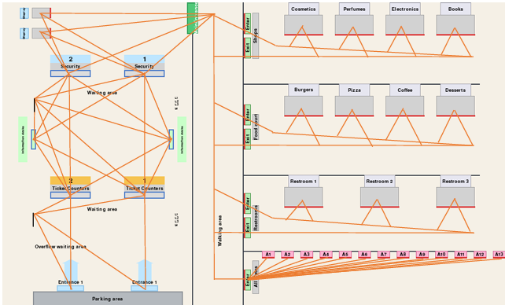
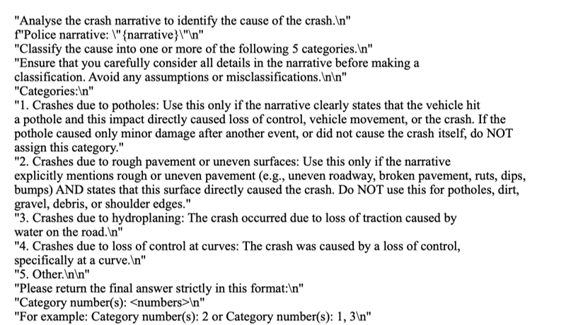
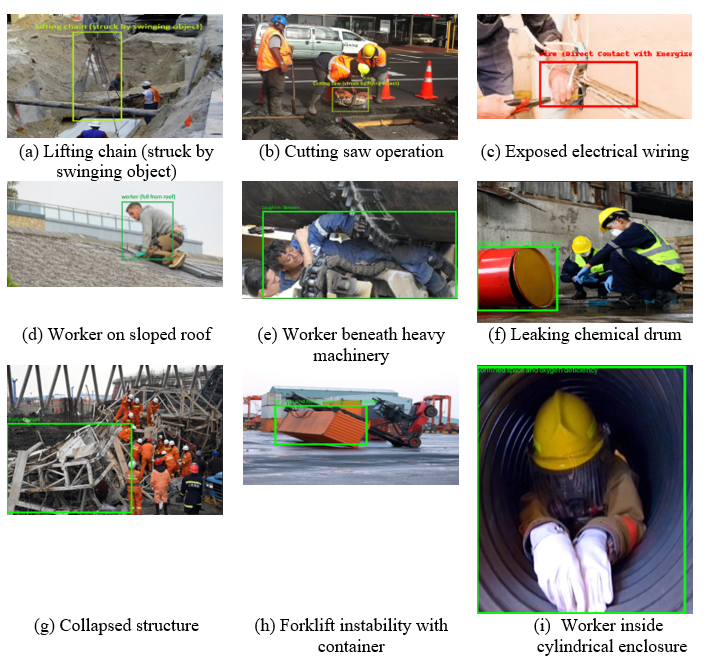
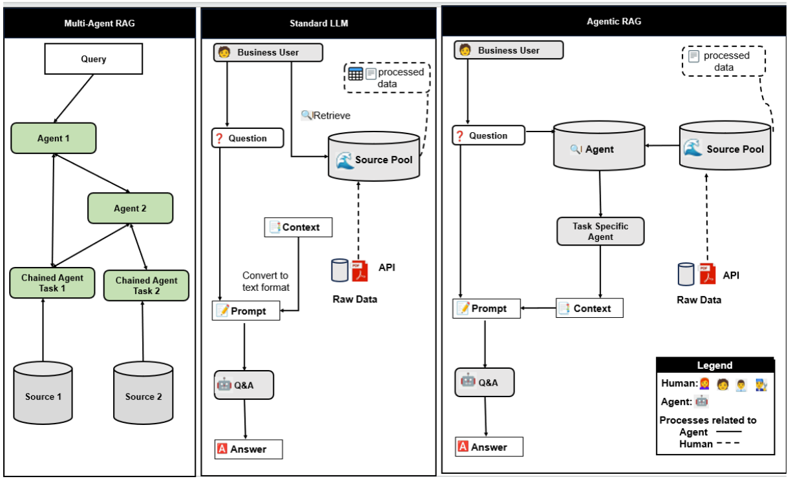
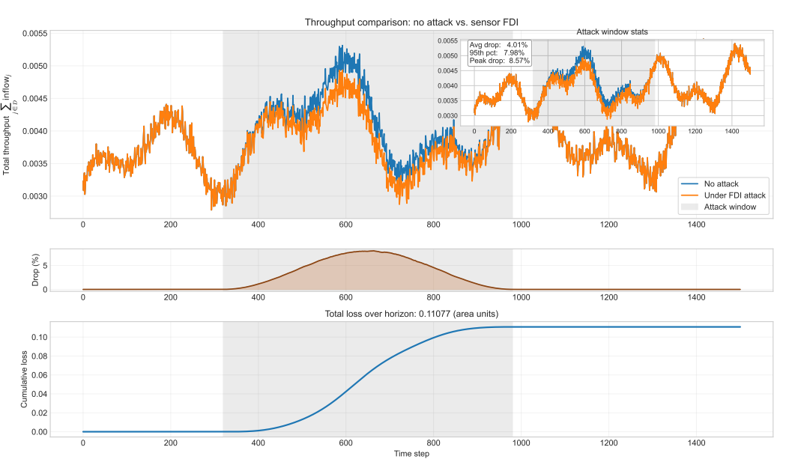
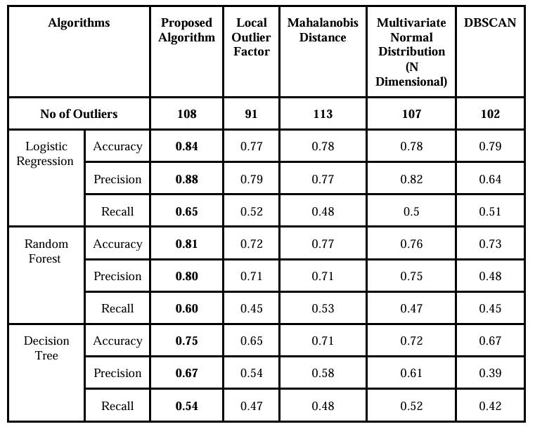
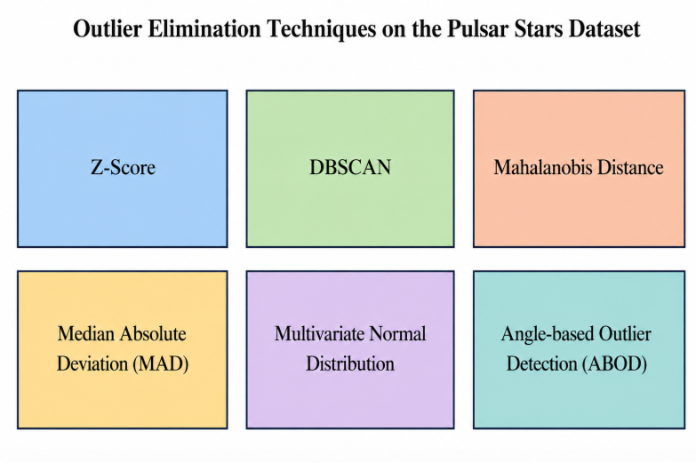
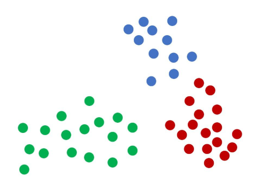
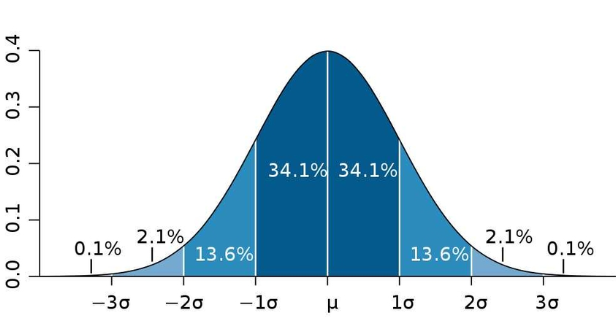
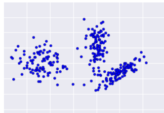

Tejaswini Katale
I am a Master’s student in Computer Science at the University of Houston. I am currently working as a Research Assistant with Prof. Lu Gao, where my work focuses on AI applications in transportation safety, healthcare, and cyber-physical systems.
Research Interests:
- Human Centered AI
- AI for Better Decision Making
- AI for Cyber-Physical Systems
I hold a Bachelor's degree in Computer Engineering from Vishwakarma Institute of Technology, India. I also gained one year of research experience as a Graduate Research Assistant under Prof. Santosh Shinde, where I worked on feature selection, outlier elimination techniques, upsampling methods, and machine learning based forecasting.
I am currently based in Texas and happy to connect about research ideas, collaborations, or AI projects. You can reach me at tkatale@cougarnet.uh.edu.

University of Houston, Texas
Expected Graduation: May 2027
News
Publications


June 28 –July 1, 2026

To be published (Expected June 2026)







On going Projects
Implemented a deep reinforcement learning framework for adaptive traffic signal control using SUMO and TraCI. The project models a four-way signalized intersection and trains a Dueling Double DQN agent to optimize signal phase decisions under full and partial vehicle detection scenarios.
Designed an AI-assisted framework for medication-safe telehealth workflows, aimed at improving communication, medication tracking, and care coordination in virtual healthcare settings. The system explores how AI support can reduce medication-related risks by organizing patient information, assisting with workflow guidance, and supporting safer remote care interactions.
Developed an aviation cyberattack detection framework using Google's TimesFM 2.5 time-series foundation model and a CNN-based classifier head. The system analyzes ADS-B aircraft trajectory data to detect spoofing, replay, saturation, and interpolation attacks using window-based time-series modeling and attack-specific evaluation metrics.
Designed a spatio-temporal graph learning framework for segment-level crash risk forecasting. The model integrates GraphSAGE-based neighborhood aggregation, directional upstream attention, adaptive gated fusion, and temporal sequence modeling to learn roadway safety patterns and predict future crash risk.
Service
2026, 5th International Conference on Distributed Computing and Electrical-Electronic Circuits (ICDCECE)
2026, 1st IEEE International Conference on Instrumentation (INSTCon)
2025, International Conference on Data Science and Information Systems (ICDSIS)
2025, International Conference on Intelligent Computing and Knowledge Extraction (ICICKE)
USDOT Cyber-CARE UTC National Transportation Cybersecurity Competition, Link